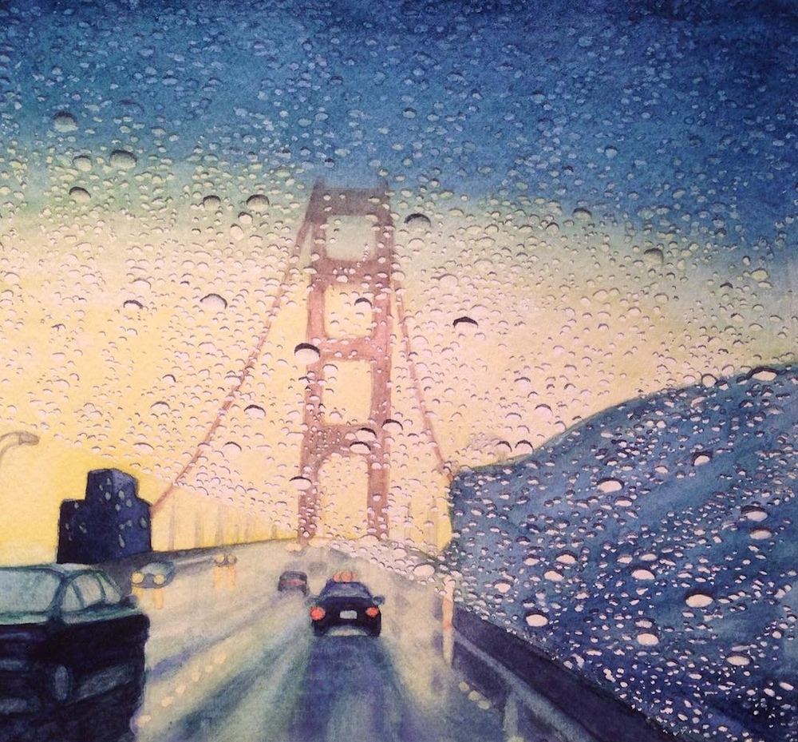
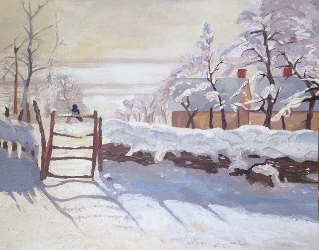
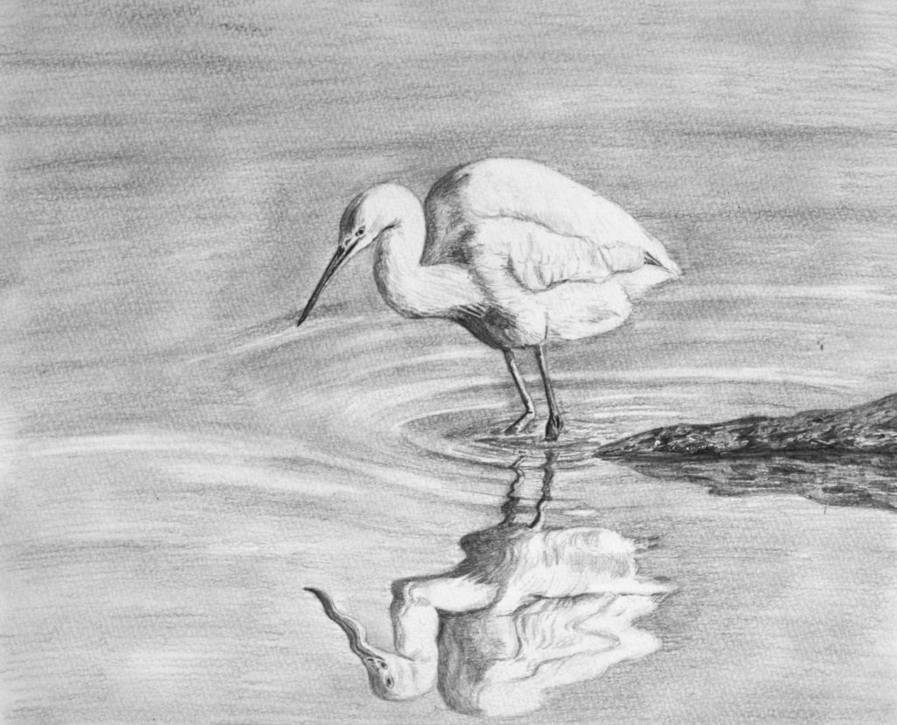
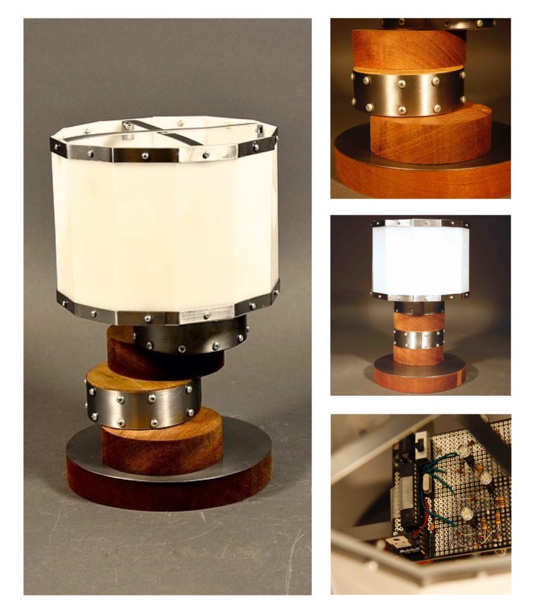
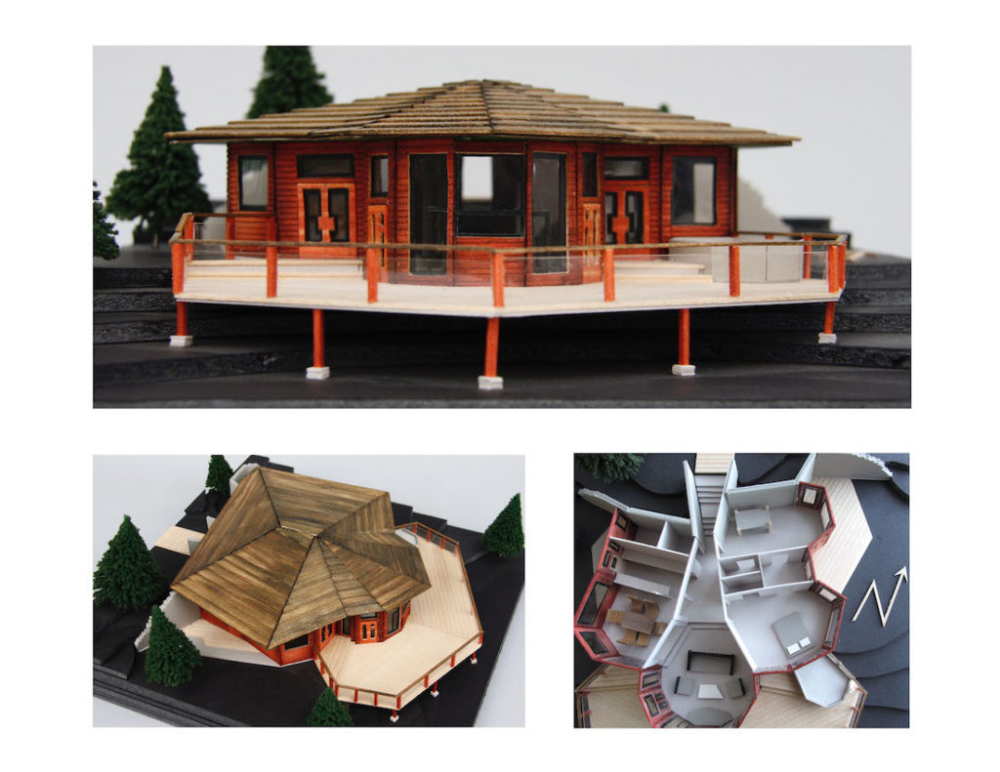
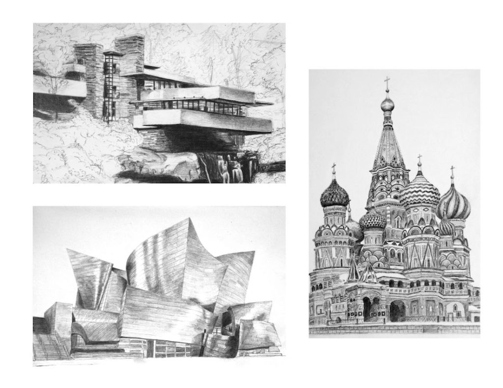
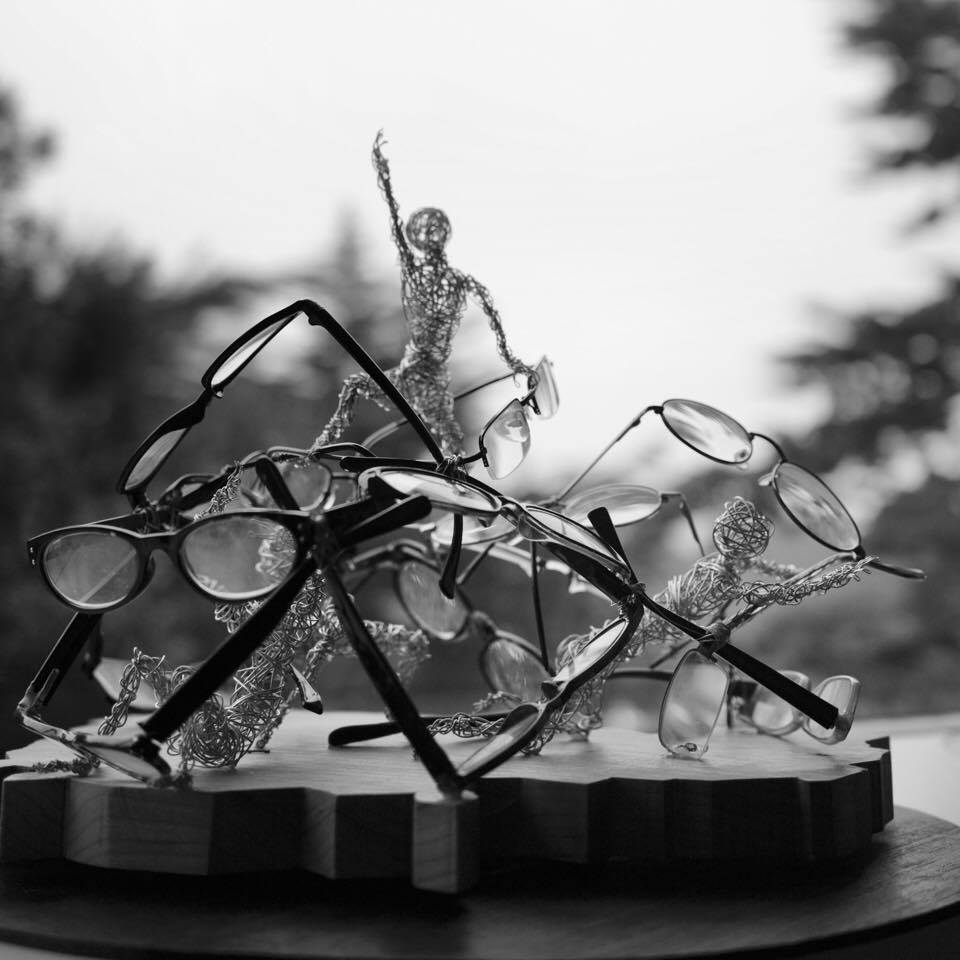

Recovered archive. These pieces were restored from captures of the earlier site. Titles are drawn from the original filenames and several images are reduced-resolution copies.

Watercolor Bridge
1000 × 929

Oil Painting, after Monet
640 × 502

Egret
1024 × 829 · reduced copy

DT Lamp
896 × 1024 · reduced copy

Architectural Model
1024 × 791 · reduced copy

Visual Journals
1024 × 791 · reduced copy

Cambodian Genocide
960 × 960